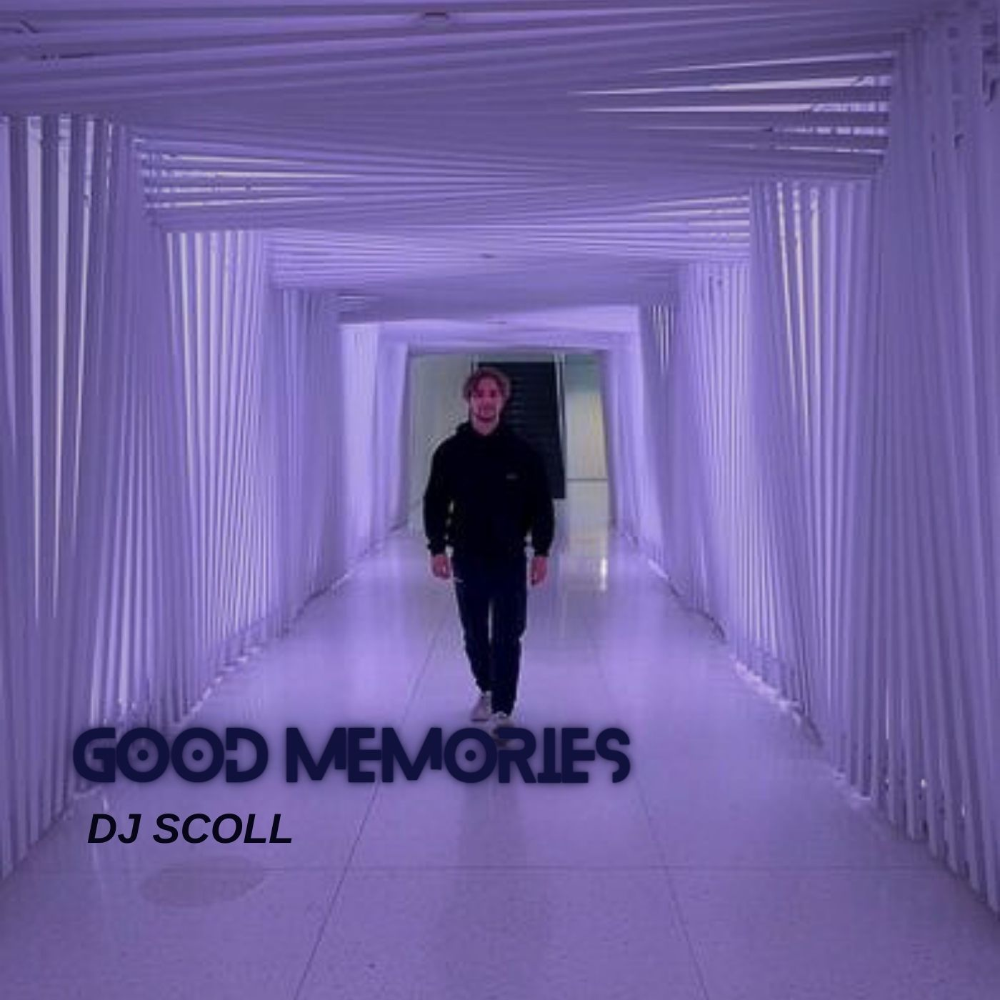
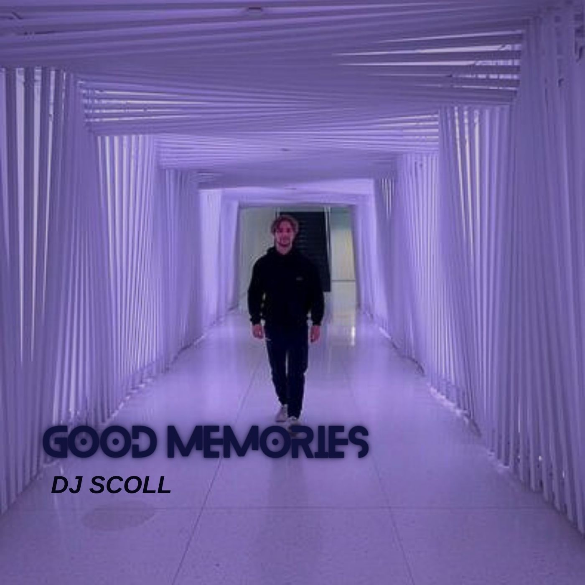
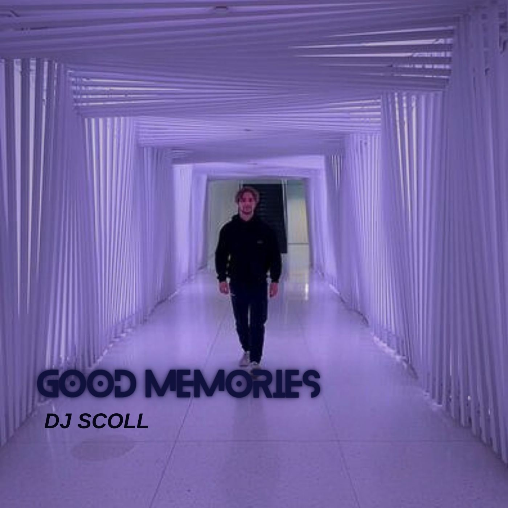
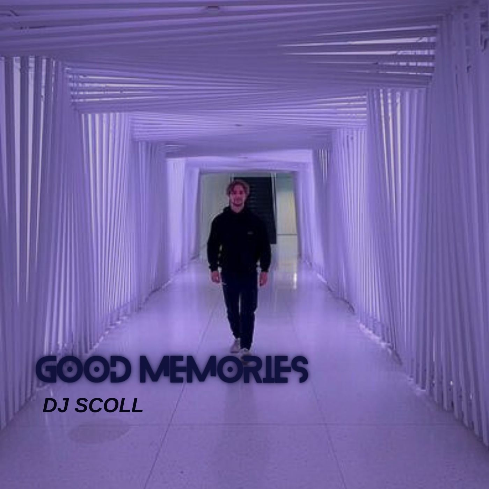

Dernier Single
Single In My Mind
Single Good Memories
Le soleil s'élevait lentement à l'horizon, teintant le ciel d'une palette de couleurs chaudes. Les rues s'animaient progressivement alors que la ville se préparait pour un événement d'envergure. Des stands colorés se dressaient le long des avenues, offrant une variété de mets délicieux et d'artisanat local. La musique résonnait dans les airs, attirant les foules vers la place centrale où se déroulerait le point culminant de la journée. Les gens se rassemblaient avec enthousiasme, impatients de participer aux festivités. Les artistes locaux montaient sur scène, leurs performances captivant le public dans une ambiance de célébration et de joie.
Dans un studio enfoui dans les rues animées de la ville, l'air bourdonne d'excitation et de créativité. Les musiciens s'assoient devant leurs instruments, prêts à transformer leurs idées en mélodies envoûtantes. Les notes résonnent dans l'espace, fusionnant pour former une symphonie d'émotions et de rythmes. Les paroles prennent vie, tissant des histoires qui captivent l'âme de ceux qui les écoutent. Chaque battement de tambour, chaque riff de guitare, est un pas de plus vers la création d'une œuvre intemporelle. Les heures s'écoulent comme des minutes, les artistes se perdent dans leur passion commune pour la musique, créant un monde où les sons transcendent les frontières du temps et de l'espace.
Au cœur d'un atelier baigné par la lumière douce de l'aube, un artiste se tient devant son chevalet, le regard concentré et les mains agiles. Sa palette déborde de couleurs vives, prêtes à être appliquées sur la toile blanche qui attend patiemment. Chaque coup de pinceau est méticuleusement calculé, chaque geste empreint de passion et d'émotion. À travers ses œuvres, l'artiste transmet des messages subtils, capturant l'essence de la vie et de la beauté qui l'entoure. Son travail est un reflet de son âme, une exploration profonde de son imagination sans limites. Chaque tableau raconte une histoire unique, invitant le spectateur à plonger dans un monde où la réalité se mêle à la fantaisie avec une grâce incomparable.
L'artiste avait toujours été fasciné par les couleurs et les formes depuis son plus jeune âge. Né dans une famille modeste, il trouvait refuge dans son imagination débordante, esquissant des croquis sur tout ce qui lui tombait sous la main. Malgré les défis et les obstacles rencontrés sur son chemin, sa passion pour l'art ne faiblit jamais. Il travailla dur pour perfectionner son talent, suivant des cours du soir et pratiquant sans relâche. Au fil des années, son style unique commença à émerger, mélangeant habilement des influences variées pour créer des œuvres qui parlaient à l'âme. Ses tableaux étaient une expression de sa propre histoire, un mélange d'expériences personnelles et d'observations du monde qui l'entourait. À travers ses œuvres, l'artiste trouva un moyen de communiquer ce qui lui était difficile à exprimer avec des mots. Chaque coup de pinceau était une libération, chaque toile était une tranche de sa vie immortalisée sur le canevas. Son art devint son refuge, sa thérapie, sa raison de vivre. Aujourd'hui, l'artiste est reconnu à travers le monde pour son talent exceptionnel et sa vision unique. Son histoire est un témoignage inspirant de persévérance, de passion et de détermination, prouvant que même dans l'adversité, l'art peut être une source infinie de lumière et d'espoir.